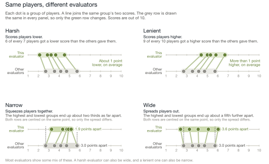
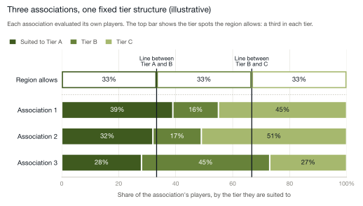

Youth hockey series · Paper 2 of 3
The Competitive Gap Problem
Why Competitive Imbalance Persists Year After Year
The Challenge Associations Are Trying to Solve
Every association begins the season with the same goal: build teams that can compete.
Evaluations are scheduled. Volunteers give up evenings and weekends. Coaches submit input. Someone on the board works late through spreadsheets, rankings, and tier counts. Within a few weeks, dozens or hundreds of players must be sorted into teams that will play each other for four or five months.
It is a big job. It is also one of the decisions that matters most all year.
When teams are well aligned, games stay close. Players are tested without being overwhelmed. Standings stay uncertain deep into the season. Parents see growth. Coaches see engagement. The bench is loud after a win and still talking after a loss. In a word, it is fun.
When teams are not well aligned, the pattern described in the first paper takes hold. A few teams separate early. Others cannot keep games close. By midseason, outcomes are predictable. The coach knows it. The parents know it. The kids know it too, even if they don't say so on the drive home.
No association sets out to create that result. The challenge is not commitment. It is structure.
Each season brings a new group of kids. Players grow at different rates. Some take big steps forward. Others plateau. A birth year that was balanced last season may bunch up this year.
At the same time, associations work within fixed limits. Tier counts are often set in advance. League structures have to be announced early. Once schedules are published, moving a team or a player becomes disruptive, and politically difficult.
That puts a lot of pressure on a short evaluation window to produce stable, accurate team boundaries.
If those boundaries are even slightly off, the effects grow. A handful of players moving one way or the other can change the strength of several teams. That change then plays out across an entire tier for the whole season.
The result is rarely dramatic. It is subtle. A few more lopsided games than expected. A few fewer games decided late. A slow separation in the standings. Over time, those small differences add up to the imbalance families recognize, and to the frustrated emails that follow.
The important point is this: competitive balance is not a cosmetic feature of a league. It is the outcome of how players are grouped and how leagues are formed. When imbalance shows up year after year, region after region, something is entering the system before the first puck drops.
To find where, we have to look closely at the evaluation itself.
What Evaluations Are Actually Measuring
Picture the evaluators. Three or four volunteers on a September evening, watching two dozen kids at a time cycle through drills and scrimmages. Typically, the evaluators have never met these kids. They are asked to score skating, puck control, decision-making, positioning, compete level, and awareness, and to do it quickly, for every player, every session. Out on the ice, the kids are having the most fun they will have all week. Up in the stands, the adults are doing arithmetic.
When parents think about evaluations, they usually assume one of two things is being measured. Some believe the scores reflect how a player performed on that night. Others believe the process is finding a player's true level within the age group.
In practice, an evaluation tries to capture both through observation. What it actually produces is a set of opinions about what happened on the ice, shaped by the people watching. Careful, honest opinions. But opinions.
Over time, patterns show up in how each evaluator scores. Some use the full range. Others cluster players tightly. Some score a little high overall. Others are more conservative. Evaluators also differ in what they notice first and reward most readily: the skating stride, the puck decision, the read of the play, the effort.
These patterns are not mistakes. They are what human judgment looks like. For each evaluator, they are consistent from player to player and session to session. Taken together, they form what we call an evaluator profile: the recurring way one person interprets and scores what they see.
Figure 1 shows four evaluators from the same evaluation. Each one is compared with the other evaluators who scored the same players.

Same evaluation, same drills, same nights. One evaluator is harsh: they scored six of every seven players lower than the other evaluators did. Another is lenient: they scored nine of every ten players higher. A third bunches players together, separating them only about two thirds as much as the other evaluators do, so the strongest and weakest end up looking closer than they are. A fourth spreads players about a fifth further apart, so small differences look bigger than they are. Most evaluators show some mix of these. None of them is doing anything wrong. They are simply different, and consistently so.
It is tempting to assume that using several evaluators solves this. If more people score the same players, shouldn't their tendencies cancel out?
They would, if every player were seen by every evaluator. A harsh evaluator would lower everyone by the same amount, and the order would not change. But that is not how evaluations work. A player's final score is a blend drawn from several sessions, each staffed by a different mix of evaluators. In the evaluation behind Figure 1, the harsh evaluator and the lenient one each saw only about half of the 575 players. A player who happened to skate in front of the lenient evaluator got a boost that a player in the next group never had a chance at.
So each player's overall score reflects a slightly different blend of evaluators, and that blend is rarely the same from one player to the next. Because each evaluator's pattern repeats, as Figure 1 shows, the differences do not cancel out. They shift the rankings.
When evaluator profiles and that uneven mix go unrecognized, the final rankings reflect scoring patterns as much as they reflect real differences between players.
For the very strongest and weakest players in an age group, this has little visible effect. For almost everyone else, it matters, because almost everyone else is near a line: between Tier A and Tier B, between Tier B and Tier C, and between the teams within each tier.
At each boundary there is a cluster of players whose scores are close enough that they look interchangeable on paper.
In hockey language, these are the bubble kids.
Every parent of a bubble kid knows the feeling. The list goes up. You scan for a name. You find it one line below the cut, or one line above, and you cannot tell what made the difference. Often, no one can.
Bubble kids are not fringe cases. They sit exactly where the tiers get decided, and every line has them, not only the line at the top. Some associations take the top names on the list for each team. Others hold a draft, with coaches choosing players from a pool. Either way, a player a few points up or down the list can end up on a different team. A small shift in the blended score, driven by which evaluators happened to see them, can move a player just above or just below a line.
Those shifts look minor one at a time. Once placements are made, though, they shape rosters across several teams and change the balance of an entire tier for the season. This is not hypothetical. In one association we reviewed this spring, adjusting only for evaluator profiles would have placed 12 of 271 players in a different tier, across three age groups. Each of those moves changes two rosters: the team the player leaves and the team they join.
Which raises the next question: what happens when those boundary decisions meet a fixed tier structure?
When Several Associations Meet One Tier Structure
So far we have looked at how small shifts in evaluation can move players across placement lines within one association.
The effect grows when several associations feed into a regional league.
Figure 2 shows an illustrative region of three associations. The numbers are an example, but the pattern will be familiar to anyone who has sat through a regional tiering meeting.

Swipe to see the full chart →
Each association has evaluated its own players. The bars show the proportion of those players best suited to compete at Tier A, B, or C. The proportions differ from one association to the next, sometimes by a lot.
Some associations have a deep group of higher-level players in a given birth year. Others have more players clustered in Tier B or C. These differences are natural. Birth years are uneven. Development is uneven. Population and hockey history vary from town to town.
The top bar, and the two lines running down from it, are the fixed regional structure: a third of the spots in each tier, set by registration numbers rather than by what the evaluations found.
Here is where the tension shows up.
Association 1 has 39 percent of its players suited to Tier A, but the region only makes room for 33 percent, so some players who are Tier A calibre at home must move down. Association 3 has only 28 percent suited to Tier A. The same 33 percent line applies, and players may move up relative to where their own evaluation put them.
The line between Tier B and C tells an even bigger story. Association 2 has 51 percent of its players suited to Tier C, but the region has room for 33 percent. At the line between Tier A and B, that association looks perfectly normal. At the line between Tier B and C, nearly one in five of its players has to move up into Tier B, into games against players a clear step ahead of them.
No one has made a wrong decision. The issue is that the same two lines are being applied to three different groups of kids.
Even if every association's evaluation were perfectly calibrated, the moment those associations enter a system with fixed regional tier counts, the natural variation between them gets squeezed.
Two things follow.
Between associations, the labels stop meaning the same thing. An association with an unusually strong birth year has to push some Tier A players down. An association with a thin top end has to fill its Tier A spots with players who would be Tier B elsewhere. Both teams are called Tier A. They are not the same level of hockey.
Within each association, the cut line moves. A bubble kid's placement now depends not only on how they played, but on how many strong players their association happens to have that year. The same player could be Tier A in one town and Tier B in the next.
Over a season, these small mismatches compound.
Teams from one association enter a regional Tier A bracket with more underlying skill than Tier A teams from another. Some Tier B teams carry as much talent as Tier A teams elsewhere. At the other end, some Tier B teams are really Tier C teams, pushed up to fill spots. The first group wins a lot. The second group loses a lot. Neither set of games is much fun for either bench.
This is the first paper's chart, seen from the other side. Teams pushed up a tier tend to become the ones that finish below 30 percent. Teams holding players who were pushed down tend to become the ones that finish above 70.
From the outside, the result looks familiar: dominant teams, winless teams, standings that settle by November. Parents wonder aloud whether their team is in the right tier. Coaches ask for a review and are told, reasonably, that the schedule is set.
From the inside, every association followed a sensible process.
The imbalance did not come from poor evaluation. It came from natural differences between associations meeting one fixed regional structure. That structure takes small local differences and makes them bigger.
And it does its work quietly, before the first game is played.
Why Competitive Imbalance Repeats
By the time the puck drops on opening weekend, the structure is set.
Teams are formed. Tiers are final. Schedules are published. Coaches are installing systems. Parents are arranging carpools. Even if the first few games suggest imbalance, there is little room to adjust.
This is why competitive imbalance feels so familiar.
It is not the result of one wrong ranking. It is not one association making poor decisions. It is not evidence that volunteers did not try hard enough. In most cases, everyone involved acted reasonably with the information and the constraints they had.
The pattern persists because the design persists.
Evaluators score differently, and not every player is seen by the same evaluators. Those differences move players at the placement lines. Several associations then flow into a regional system whose tier counts come from registration numbers rather than from the shape of the age group. Natural variation across associations meets one uniform structure. By the time teams are formed, the system has already built small mismatches into the rosters.
Over the season, those mismatches show up in the standings.
A handful of teams separate early. Some struggle to stay competitive. The midseason conversations follow a script. Should the tiers have been set differently? Were certain teams misplaced? Could moving a team help? A coach raises the question. A parent writes the email. The answer, honestly given, is that it is hard to change now.
Occasional adjustments are possible. But moving teams midseason treats the symptom, not the design. Once schedules are built and teams have an identity, changing the structure is costly and disruptive. And the fun that a close season would have provided is already gone for that year.
So the cycle continues.
The next season, a new group of kids arrives. Evaluations are held. Tier counts are set by registrations again. Associations work inside the same regional framework. Even if individual placements improve a little, the conditions that create imbalance stay largely the same.
When similar inputs meet similar constraints, similar outcomes follow.
That is the central point.
Competitive imbalance in youth hockey is not mainly about effort, intent, or even isolated evaluation error. It is what the current system produces when it combines the natural variation in human judgment with fixed regional tier structures.
If imbalance is built into the design, improvement cannot rely on better intentions or small adjustments. It requires looking at the design itself: how teams are formed and how tiers are aligned in the first place.
That is where meaningful change begins. It is also the subject of the third paper.
Want Part 3 when it’s released?
Sources and method
Figure 1: one association's 2025 fall evaluation, skaters only, 575 players. Each evaluator is compared only with other evaluators' scores for the same players; the four shown each scored at least 250 players. The grey row is drawn the same in every panel: each group's grey dot sits at its average position across the four panels, and the green dot moves with it, so each group's gap is unchanged. In the Narrow and Wide panels, the two rows are centred on the same point so only the spread is compared.
Tier changes: a second association's 2025 fall evaluation, 271 players in three age groups (U13, U15, and U18). Players were ranked by their scores before and after adjusting for evaluator profiles, then cut at the association's actual tier sizes. Twelve landed in a different tier.
Figure 2: illustrative, not drawn from any single region.
© 2026 Max Analytics · maxanalytics.ca · Figure 1: one association's 2025 fall evaluation, skaters only. Figure 2: illustrative.